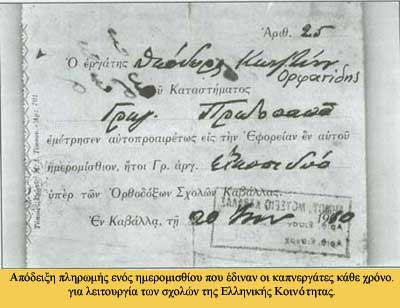

|

Η οικονομική ανάπτυξη της Καβάλας των αρχών του 20ου αιώνα συμπίπτει με την έξαρση του εθνικισμού στα Βαλκάνια, που κορυφώνεται με τον ένοπλο αγώνα μεταξύ Ελλήνων και Βουλγάρων για την κυριαρχία στη Μακεδονία. Τα μέλη της ελληνορθόδοξης κοινότητας της πόλης ανεξάρτητα από την κοινωνική τους θέση, πρωτοστατούν στην αντιμετώπιση της βουλγαρικής απειλής. Για να μην κινούν την υποψία των τουρκικών αρχών δραστηριοποιούνται συνήθως μέσα από συλλόγους και αδελφότητες εκπαιδευτικού ή κοινωνικού χαρακτήρα.
Συγκινητική είναι και η συμβολή των καπνεργατών στην εθνική υπόθεση. Από το υστέρημά τους ενισχύουν οικονομικά τους φιλεκπαιδευτικούς συλλόγους, που προσφέρουν σπουδαίο έργο στην καλλιέργεια και διάδοση της ελληνικής γλώσσας και κουλτούρας. Ψυχή του Mακεδονικού Aγώνα της περιοχής αναδεικνύεται με τη δράση του ο ποιητής Ιωάννης Κωνσταντινίδης. Πραγματοποιεί περιοδείες στις γύρω περιοχές, συνεργάζεται με τις ελληνικές προξενικές αρχές, παρακολουθεί κάθε ύποπτη κίνηση και δίνει πολύτιμες πληροφορίες για τη δράση των Βουλγάρων. Το 1905 καταφέρνει να ματαιώσει την εγκατάσταση Βούλγαρου προξένου στην πόλη.
|
|